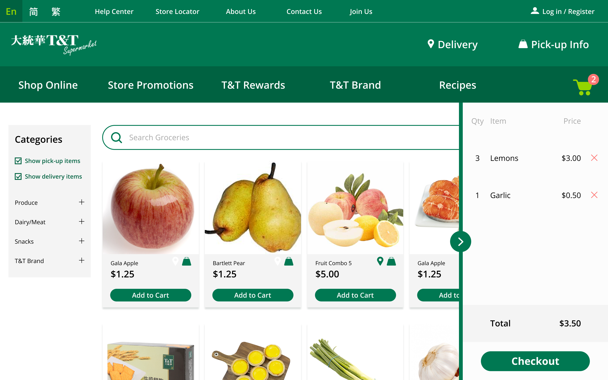

process
💻 Case Study, UX Design, UI Design, User Testing
🛠️ Figma, Photoshop, UsabilityHub
💼 Submission to UX Design Contest 13, solo project
In this case study for the UX Design Contest 13, I discovered and prioritized usability issues on the T&T Supermarket Grocery Delivery process on their desktop website. I have proposed two improvements to clarify the process of arriving at the shopping page, to distinguish between delivery and pickup, and to easily use the shopping cart.
T&T Supermarket is a Canadian grocer selling Asian-imported goods. Most of T&T's clientele are of Asian descent, and a number of them shop at T&T as they face a language barrier with most western grocery stores.
I chose to improve T&T’s website because the large Asian-Canadian population in Vancouver often rely on T&T's services, be it for a celebration cake or a weekday dinner. With the pandemic, a large number of T&T's customers will opt to use the online delivery service. Whether it is in English, Simplified Chinese, or Traditional Chinese, improvements in the website's usability will help customers of all ages and language abilities to find what they need with ease. From a business perspective, this is a strategy to maintain customer loyalty of those who prefer Asian grocers.
To identify usability issues, I went to the T&T supermarket website and went through the process of adding items to my cart until the final checkout screen.
Most of the issues I found were related to the first on-boarding steps and in the procedure of adding items to the shopping cart. In summary, the issues are:
Because most of the usability issues I found initially were higher-order issues with significant impact on the user experience, I focused on some major usability issues over minor design issues in the categorization below.
After filtering out the high impact issues, it appears that the most important issues are part of either the on-boarding or the shopping procedure.
Top Issue: Improve clarity in accessing user customization, which reduces cognitive load in finding desired items.
I decided to improve the shopping navigation and customization of shopping items, as it is the core of the online shopping experience. This was chosen over the on-boarding process because the shopping experience should be solid, no matter the display language, Delivery address is in already in a visible area, allowing it to be easily changed.
Current designs
This current landing page design prioritizes in-store promotions. Navigation to grocery items is unclear and important notices are not given enough hierarchy on the page.
The current design of the shopping page does the minimum of showing listings, categories, support, etc, but is in need of UX and UI improvements to easily find items, quickly view the shopping cart, and remove items as easily as adding them.
These are the interfaces I chose to work with. I identified their issues and proposed improvements.
New concept for landing page has a redesigned navbar, CTA button to directly go to the "Shop Online" page, and the COVID-19 notice in a visually important area. If I had time, I would have found graphics for the section of 3.
The new shopping page concept contains a shopping cart drawer and icons to show delivery/pick-up possibilities. Items are not segregated into "Click and Collect" (pick up) or "Delivery to Home" anymore.
https://www.flickr.com/photos/applesnpearsau/12197650876 https://storage.needpix.com/rsynced_images/pear-2737364_1280.png https://www.tntsupermarket.com/50681801-seafood-combo-s-1.html https://www.tntsupermarket.com/05008501-garlic.html https://www.tntsupermarket.com/76761501-t%26t-milk-cracker.html https://www.tntsupermarket.com/50681801-seafood-combo-s-1.htmlhttps://www.tntsupermarket.com/62708501-egg-tart-6pcs(cold).html https://www.tntsupermarket.com/50685101-produce-combo-p-5.html https://www.tntsupermarket.com/05014501-green-onion.html Search Icon
A/B tests were used for both concepts as a quick way to gauge first impressions.
The landing and shopping interfaces were shown. Participants were asked to choose which one they preferred and explain why.
Comments
Bigger font, easy to read. 3 big boxes that say hey click me.
The images in the other one was less inviting
Cleaner layout
Things I click most (cart, login/register, shop online) are easiest to see and use
Cleaner, more concentrated colors (other one felt like too many different colors are together). big simple banner in the middle, looks more professional and minimalistic.
Webpage is easy to read and digest quickly, direct links to whatever I may most likely want/need to access.
There's miniscule difference. I just like the promotional imagery being immediately shown.
It designates the location as to where the delivery would be going to.
Information displayed clearly and precisely. no unnecessary information clogging the space
Comments
Everything is listed on the side; it's more neat
It's clean
Clean interactive page, shows items with names and prices clearly.
I like the cart listing on the right; being able to see amounts is important because I often accidentally add more than what I want, or there's a page loading issue at some point and I become unsure of what's in my cart
Sleek and modern design, showcasing what is currently in your cart. the other style is more oldschool. However the one I chose is slightly better at keeping track of what you already purchased so you don't buy too much.
My recommendations for T&T Supermarket are mostly to think about the visual hierarchy in their website and how intuitive it is for a user no matter which language they prefer. Apart from a more concrete design system, I would recommend:
Working backwards and setting myself to-do lists really helped me outline my tasks. I will be using Notion for future design and portfolio documentation
Setting timers for certain tasks where going down a rabbit hole is too easy
An improvement for next time: start earlier during the week so I can gain more of my coworkers' feedback and flesh my ideas out more. I can learn more about conducting testing from them too
As of September 2021, the T&T website UI has improved vastly from when I did this case study.